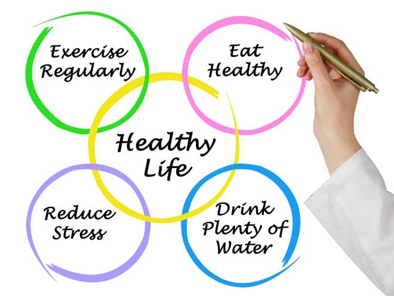

Tips For a Healthy Lifestyle
- Eat a Balanced Diet:
- Include a variety of fruits, vegetables, whole grains, and lean proteins. Limit processed foods, sugary snacks, and excessive intake of saturated and trans fats. Stay hydrated by drinking an adequate amount of water.
- Engage in Regular Exercise:
- Include both aerobic exercises (e.g., walking, jogging, swimming) and strength training. Aim for at least 150 minutes of moderate-intensity exercise or 75 minutes of vigorous-intensity exercise per week.
- Prioritize Adequate Sleep:
- Ensure you get 7-9 hours of quality sleep each night. Maintain a consistent sleep schedule and create a relaxing bedtime routine.
- Manage Stress:
- Practice stress-reducing techniques such as deep breathing, meditation, yoga, or mindfulness. Take breaks and prioritize activities that bring joy and relaxation.
- Avoid Harmful Substances:
- Quit smoking and avoid exposure to secondhand smoke. Limit alcohol consumption and avoid recreational drug use.
- Schedule Regular Health Check-ups:
- Visit your healthcare provider for routine check-ups and screenings to detect and address health issues early.
- Maintain Personal Hygiene:
- Practice good hygiene habits, including regular handwashing. Maintain a clean living environment to prevent the spread of germs.
- Foster Social Connections:
- Build and maintain positive relationships with friends and family. Social interactions contribute to overall well-being.
- Prioritize Mental Health:
- Seek support for mental health conditions, practice self-care, and be aware of your emotional well-being.
- Limit Sedentary Behavior:
- Avoid prolonged periods of sitting by incorporating breaks and regular physical activity into your day.
